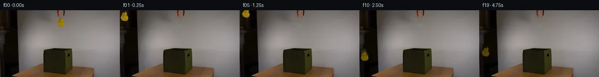

![首帧]()

Round 00
2026-11-06T10:25:37.038997+00:00像素候选变化代码 +228/−0inspection 更新
pixels 2cb470095986b062 · code ce16e46d37efe08f
查看本轮 generate.py 真实 diff
--- previous/generate.py
+++ current/generate.py
@@ -0,0 +1,228 @@
+"""PixelWorld-Text case_0060.
+
+A suspended orange-black grabber releases a yellow rubber duck above an open
+dark green fabric box. Sprites are segmented numerically from first_frame.png,
+the covered background is inpainted, and the duck is animated with analytic
+gravity, a small tumble, squash-on-impact and depth-based shadow shading.
+"""
+from pathlib import Path
+import sys
+import numpy as np
+from PIL import Image, ImageDraw
+import cv2
+from scipy import ndimage
+
+ROOT = Path(__file__).resolve().parent
+sys.path.insert(0, str(ROOT))
+from artifact_io import save # noqa: E402
+
+FIRST = np.array(Image.open(ROOT / "first_frame.png").convert("RGB"))
+H, W, _ = FIRST.shape
+assert (H, W) == (144, 256)
+
+# ---------------------------------------------------------------- segmentation
+f = FIRST.astype(np.float32)
+R, G, B = f[:, :, 0], f[:, :, 1], f[:, :, 2]
+RB = R - B
+
+# Work only on the small tool/duck region at the top centre.
+ry0, ry1, rx0, rx1 = 0, 40, 115, 145
+obj = np.zeros((H, W), bool)
+obj[ry0:ry1, rx0:rx1] = RB[ry0:ry1, rx0:rx1] > 20
+lab, n = ndimage.label(obj, structure=np.ones((3, 3), int))
+
+comps = []
+for i in range(1, n + 1):
+ ys, xs = np.where(lab == i)
+ comps.append((len(xs), xs.min(), xs.max(), ys.min(), ys.max(), i))
+comps.sort(reverse=True)
+# Largest component is the duck+jaws; the components touching the top edge are
+# the two suspension rods.
+duck_jaw_id = comps[0][5]
+
+duck_jaw = lab == duck_jaw_id
+yy, xx = np.indices((H, W))
+jaw_pixel = duck_jaw & (yy <= 17) & (G < 100)
+duck_pixel = duck_jaw & ~jaw_pixel
+
+# Soft alpha from saturation distance, preserves the antialiased fringe.
+def soft_alpha(mask):
+ a = np.clip((RB - 18) / 12, 0, 1)
+ out = np.zeros((H, W), np.float32)
+ out[mask] = a[mask]
+ return out
+
+duck_a = soft_alpha(duck_pixel)
+jaw_a = soft_alpha(jaw_pixel)
+
+def crop_sprite(alpha, margin=2):
+ ys, xs = np.where(alpha > 0)
+ y0, y1, x0, x1 = ys.min(), ys.max() + 1, xs.min(), xs.max() + 1
+ y0 = max(0, y0 - margin); x0 = max(0, x0 - margin)
+ y1 = min(H, y1 + margin); x1 = min(W, x1 + margin)
+ rgb = FIRST[y0:y1, x0:x1]
+ a = (alpha[y0:y1, x0:x1] * 255).astype(np.uint8)
+ return np.dstack([rgb, a]), (x0, y0, x1, y1)
+
+duck_sprite, duck_box = crop_sprite(duck_a)
+jawL_pixel = jaw_pixel & (xx <= 128)
+jawR_pixel = jaw_pixel & (xx >= 129)
+jawL_sprite, jawL_box = crop_sprite(soft_alpha(jawL_pixel), margin=1)
+jawR_sprite, jawR_box = crop_sprite(soft_alpha(jawR_pixel), margin=1)
+
+# Pivot of the duck in global coordinates (bbox centre of the live duck).
+dys, dxs = np.where(duck_pixel)
+PX, PY = (dxs.min() + dxs.max()) / 2.0, (dys.min() + dys.max()) / 2.0
+
+# ------------------------------------------------------- clean background plate
+inpaint_mask = ((duck_a > 0) | (jaw_a > 0)).astype(np.uint8) * 255
+inpaint_mask = cv2.dilate(inpaint_mask, np.ones((3, 3), np.uint8), iterations=1)
+plate = cv2.inpaint(FIRST, inpaint_mask, 3, cv2.INPAINT_TELEA)
+# Restore the low-amplitude sensor grain that Telea smooths away.
+rng = np.random.default_rng(20261106)
+grain = rng.normal(0, 1.7, plate.shape).astype(np.float32)
+m3 = cv2.dilate(inpaint_mask, np.ones((3, 3), np.uint8), iterations=1) > 0
+plate = np.clip(plate.astype(np.float32) + grain * m3[..., None], 0, 255)
+plate = plate.astype(np.uint8)
+
… diff truncated; 141 more lines …